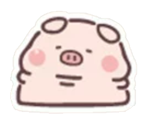

1. 原地留鼻变大淡出（卡通趣味反馈）
按新指示实现
原地留鼻放大淡出：彻底舍弃奇怪的多鼻散开。小猪被点击后身体极速缩小消失，原地仅留下小猪原本的鼻子，鼻子在原地迅速膨胀放大（1.0x → 2.0x）并优雅淡出，卡通喜剧效果拉满！
2. 重绘版大猪出场 + 身边散开黄色五角星圈
整体动态
原图浑然一体：不再单独挥球，直接采用 2048px 超清重绘版大猪。出场时从小尺寸放大弹出，身边向外爆散一圈 18 颗金黄色五角星，并在场中播放 0.22s 周期欢快循环缩放微弹。
3. 前置趴地年糕小猪 (pig2) 超清重构
100% 还原
原版 (180×159 像素颗粒)

纯正趴姿：完全保留原版趴地年糕猪造型（底部平坦、千层肉褶、黑米粒小眼与椭圆猪鼻），单图仅 30KB，渲染零负担。